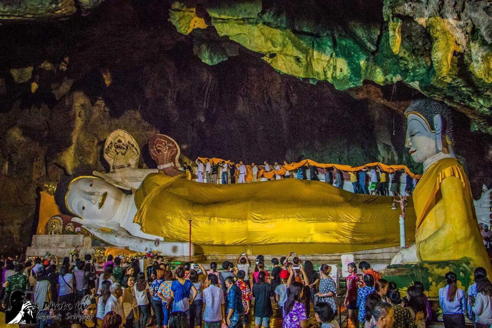

ประเพณีห่มผ้าพ่อท่านบรรทม

สำหรับประเพณีแห่ผ้าห่มพระพุทธไสยาสน์ จะจัดขึ้นช่วงวันที่ 13 เมษายน ของทุกปี (เทศกาลสงกรานต์) ทางสำนักงานวัฒนธรรมจังหวัดยะลา ได้ร่วมกับเทศบาลตำบลหน้าถ้ำ จัดกิจกรรมสืบสานประเพณีวันมหาสงกรานต์ เพื่ออนุรักษ์ขนบธรรมเนียมประเพณีไทยอันงดงาม และส่งเสริมการท่องเที่ยวในพื้นที่ ต.หน้าถ้ำ ซึ่งมีโบราณสถาน โบราณวัตถุที่สำคัญในประวัติศาสตร์ของ จ.ยะลา โดยมีพิธีห่มผ้าพระพุทธไสยาสน์ ห่มผ้าท่านเจ้าเขา เปิดถ้ำศิลป์โบราณสถานกว่า 1,300 ปี
นอกจากนี้ ในช่วงค่ำยังมีการแสดงศิลปวัฒนธรรม และการแสดงมหรสพมโนราห์ การแสดงวงดนตรีเยาวชน และดนตรีเวียนครก และนิทรรศการศูนย์วัฒนธรรมเฉลิมราชตำบลหน้า ให้นักท่องเที่ยวได้สัมผัสความงดงามอีกด้วย
ย้อนกลับ